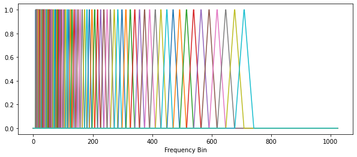
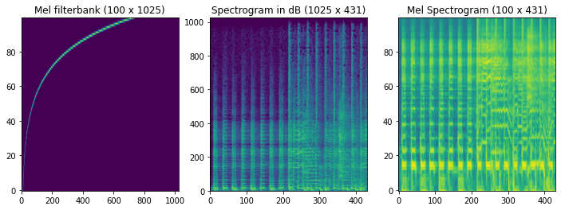
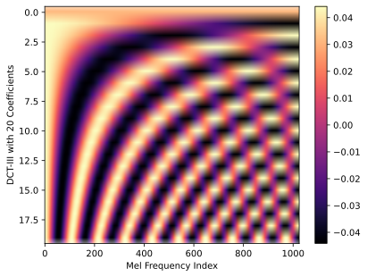
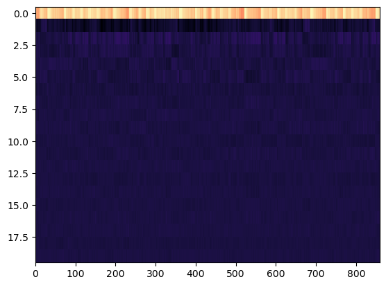

Week 9: Mel-Frequency Cepstral Coefficients (MFCC)
Chris Tralie
Today we're going to be talking about a classical timbre feature known as the Mel-Frequency Cepstral Coefficient (MFCC) transform. This feature was originally used to compress speech for analysis, but it has seen wide use in music information retrieval. As we will see, it basically throws out most information of absolute pitch, but retains information about timbre.
Part 1: Inverting Mel-Spaced Spectrograms
The first step of the MFCC is to pass from an ordinary spectrogram representation to a mel-space spectrogram. As we discussed, we can accomplish this by multiplying a spectrogram on the left by a matrix M in which each row is a different triangle centered on a different band. This matrix M is referred to as a Mel Filterbank. Below is an image of a mel filterbank
And below is an image of the corresponding multiplication:
As we discussed in module 16, though, we are losing information when we do this. It is often informative to "sonify" what information was retained so we can listen to what the computer hears at this point.
Your Task
Click here to download the starter code for today. It contains an implementation of a mel-spaced filterbank, as well as code to do an STFT. You can edit the notebook MFCC.ipynb.
Below are the steps to perform and sonify the mel spectrogram
- Create a magnitude mel-spaced spectrogram MS by multiplying on the left by a matrix M
- Multiply MS on the left by the transpose of M; that is, M where the rows are switched for the columns. You can obtain this with M.T in numpy. This will yield a matrix with the original shape of the STFT, which is the closest approximation we can get to the STFT after we've applied the mel filterbank. We'll check in as a class after this step
- Apply random phases to this new spectrogram
- Mirror this new spectrogram and perform the inverse STFT, then listen to the result.
Part 2: Mel-Frequency Cepstral Coefficients
There is another set of steps we do to to the mel-spectrogram to reduce the dimension of the features even more, while still retaining important information. The steps culminate in something called the Mel-Frequency Cepstral Coefficients (MFCCs). In this section, you'll fill in the method mfcc in mfcc.py to accomplish this. The steps are below:
-
First, compute the spectrogram and convert to a mel-spaced spectrogram using
n_bandsbands and frequencies between 1hz andf_maxhz. Typically,n_bands = 40andf_max = 8000 -
Take the log amplitude of the MFCC coefficients. You can use
amplitude_to_dbto help -
Take the "Discrete Cosine Transform Type 3" (DCT-III) of each column of this log amplitude mel-spaced spectrogram. This can be accomplished by multiplying by the left on a matrix like this, which you get from calling the provided
get_dct_basismethod:Doing this multiplication is like taking a truncated Discrete Fourier Transform of each row of the log amplitude, mel-spaced spectrogram. The DCT-III is just a slightly different "basis" for frequencies than the DFT, and it's a purely real basis (no phase).
If this is all working properly, the result on doves.wav should be this:
And here's what it looks like if we zero out the first row